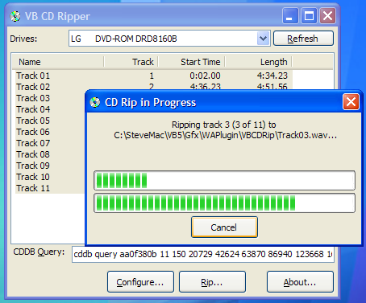
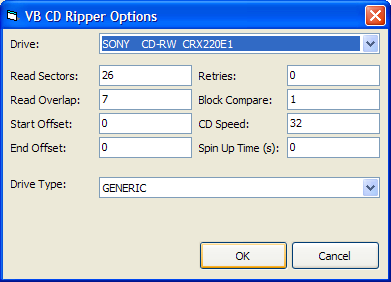

CDRip DLL Source (87K)
CDRip DLL Source (87K)
 CDRip DLL (84K)
CDRip DLL (84K)
 VB5 CD Ripper (103K)
VB5 CD Ripper (103K)
 VB6 CD Ripper (99K)
VB6 CD Ripper (99K)
 11 Jun 2004
11 Jun 2004
First Posted
 CD Track Listing Using freedb.org
CD Track Listing Using freedb.org

CD Ripping in VB Part 1
Use the CDEx Ripping Library from within your own applications
This sample looks at ripping CDs from VB using the CD ripping library provided with CDEx. In addition to providing a VB compatible wrapper around the CD ripping functions, it provides a buffered WAV file writer which can be reused for other applications such as audio recorders and processors.
About the CDRip Library
The CDRip.DLL library is a core component of CDEx. CDEx is released under the GNU General Public Licence (GPL), which means that any component which uses this library must also be released under the GPL, unless you obtain agreement otherwise from the author. It goes without saying that if you want to use it, then you should be doing something more useful than simply duplicating part of/all of CDEx. The rather lame (small l) UI in the sample provided here is just a test harness to exercise the functions of the library. I encourage you to download CDEx and try it; it's a neat application.
CDRip.DLL is a Win32 DLL which means you should put it somewhere VB will find it; when using the IDE it is easiest to use the Windows\System directory, but you can put it in the same directory as the executable once deployed.
CDRip Functionality
CDRip provides three main areas of functionality:
- Detecting CD Players on the System.
- Providing Table Of Contents for CD Drives.
- CD Playing.
- CD Ripping (duh) and configuration.
These functions are made available through a series of function calls from the DLL, but they're easier to use if wrapped into more specific classes. Therefore the implementation here provides the following VB wrapper code:
- cCDRip
Top-level class which maintains the collection of drives and the loaded CDRip.DLL version.
- cDrive
A single CD drive on the system. This class can be used to play the CD as well as configure the ripping options for the drive (although typically the defaults work fine and you will not need to look at them).
- cToc
Represents the Table Of Contents for a CD. This class includes the code to calculate the FreeDb CDDB ID which can in turn be used to obtain track listings from FreeDb.org.
- cTocEntry
A single track within a CD's Table Of Contents.
- cCDRipper
A CD ripper. This can be either be configured to rip a section of the CD or can be created from to rip a single cTocEntry.
I'll cover these in turn.
1. cCDRip
This class is needed before you use the other functions. The Create method is used to initialise the CDRip library. The library persists settings into an INI file, and you can specify the location of this as a parameter. The CDDriveCount and CDDrive properties can then be used to obtain information about drives on the system.
2. cDrive
This class provides the ability to configure how the ripper uses the drive, to play CDs and to obtain table of contents information.
In my experience, I've never needed to adjust the ripper parameters, but they can be adjusted using these methods. To be honest, I'm not certain what most of them do.
CD Rip Configuration Options
- Name - gets the name of the CD Drive.
- ReadSectors - gets/sets the number of read sectors on the drive.
- ReadOverlap - gets/sets the read overlap used.
- StartOffset - gets/sets start offset.
- EndOffset - gets/sets end offset.
- Retries - gets/sets the number of retries to use when reading.
- BlockCompare - gets/sets the block compare parameter.
- CDSpeed - gets/sets the drive speed multiplier.
- SpinUpTime - gets/sets the spin-up time.
- DriveType - gets/sets the type of CD Drive.
Playing CDs is accomplished through a handful of functions:
- PlayCDTrack - plays the track with the specified 1-based track index.
- IsAudioPlaying - gets whether the CD is playing or not.
- PauseCD - pauses playback if the CD is playing.
- UnpauseCD - unpauses playback previously paused with PauseCD.
- StopCD - stops CD playback.
Other functions are as follows:
- TOC - gets a cToc object describing the table of contents for the current CD (if there is one).
- IsUnitReady - gets whether the CD is ready to play or rip data (i.e. contains a disc).
- Refresh - refreshes information about the drive.
- EjectCD - ejects the drive tray.
- CloseCD - closes the drive tray.
3. cToc
This class provides the table of contents for a drive, and also provides a convenient way to obtain the CDDB Id and CDDBQuery for the disc, which can be used with the code in the CD Track Listings to obtain album, artist and track name information.
- CDDBId - gets the CDDB Id for the current disc.
- CDDBQuery - gets the CDDB query string for the current disc.
- Count - gets the number of tracks for the current disc.
- Entry - gets a cTocEntry object for the specified track.
- Refresh - refreshes the information held by this class.
- TotalLengthSeconds - total length of the CD in seconds.
- TotalLengthSectors - total length of the CD in sectors (1/75th of a second).
4. cTocEntry
This class provides information about a single track on the CD.
- TrackNumber - gets the track number.
- TOCEntryType - gets the type of track, which can either be a data track (CDROMDATAFLAG) or an audio track (AUDIOTRKFLAG).
- StartSector - gets the starting sector for this track.
- Offset - gets the start sector for the track including the CD audio offset.
- EndSector - gets the ending sector for this track.
- SizeBytes - gets the size of an audio track in bytes.
There are also various other methods to obtain the start time and length in various units and formats, which should be self-explanatory.
5. cCDTrackRipper
There are two ways of using the track ripper: either to extract a particular track based on its cTocEntry information (using CreateForTrack) or to extract a section of information from a cDrive (using CreateForSection. Note that the start and end sectors are specified in CD sectors, or 1/75 of a second.)
Once the create method has been called, use OpenRipper to initialise the ripper for reading. Once this has succeeded, you call Read repeatedly until it returns False; each read will populate the ripped data into the buffer which can be accessed through ReadBufferPtr and ReadBufferSize. Finally, when finished you call CloseRipper.
Writing a Wave File
A .WAV File is a fairly straightforward file format which uses an extensible file format based around the concept of "chunks" to define the contents. Chunks have headers which describe the type of the content (using a scheme called FourCC, in which the unsigned 32 bit dword created from four ASCII bytes is used as the tag), the size of the raw content, and then the raw content itself. In a .WAV file, you need at least three chunks:
- A "RIFF" chunk, defining the type of media file.
- A "fmt" chunk describing the format of the wave data.
- A "data" chunk, containing the raw wave data in the specified format.
The Windows multimedia IO functions make it easier to manage chunks, and will automatically keep track of the amount of content written to an individual chunk and append it to the header. For a .WAV file, you need to do the following (error handling omitted for clarity):
- Open a file for writing using mmioOpen:
m_hMmio = mmioOpen( _ sSoundFile, ByVal 0&, MMIO_ALLOCBUF Or MMIO_READWRITE Or MMIO_CREATE) - Write the header. This divides into three stages:
- Write the RIFF header:
Dim lR As Long Dim mmckInfoParent As MMCKINFO mmckInfoParent.fccType = mmioStringToFOURCC("WAVE", 0) lR = mmioCreateChunk(m_hMmio, mmckInfoParent, MMIO_CREATERIFF) - Write the fmt chunk:
' Create the "fmt" chunk: Dim mmckInfoChild As MMCKINFO mmckInfoChild = m_ckBlank mmckInfoChild.ckid = mmioStringToFOURCC("fmt", 0) mmckInfoChild.ckSize = Len(wavEx) lR = mmioCreateChunk(m_hMmio, mmckInfoChild, 0) ' Write the format information: Dim wavEx As WAVEFORMATEX wavEx.cbSize = 0 wavEx.nAvgBytesPerSec = 176400 wavEx.nBlockAlign = 4 wavEx.nChannels = 2 ' Stereo wavEx.nSamplesPerSec = 44100 ' 44.1kHz wavEx.wBitsPerSample = 16 ' 16bits/sample wavEx.wFormatTag = 1 lSize = mmioWrite(m_hMmio, wavEx, Len(wavEx)) ' Finish the chunk and go back to the RIFF chunk lR = mmioAscend(m_hMmio, m_mmckInfoChild, 0) - Create the data chunk:
Dim mmckInfoData As MMCKINFO mmckInfoData.ckid = mmioStringToFOURCC("data", 0) lR = mmioCreateChunk(m_hMmio, mmckInfoData, 0)
- Write the RIFF header:
- Append the raw wave data to the data chunk:
' Assuming lPtrBuff is a pointer to some memory and ' lWriteSize is the amount of data to write. This ' can be repeated many times: lSize = mmioWrite(m_hMmio, ByVal lPtrBuff, lWriteSize) - Finish the data chunk and the RIFF chunks and close the file:
lR = mmioAscend(m_hMmio, mmckInfoData, 0) lR = mmioAscend(m_hMmio, mmckInfoParent, 0) mmioClose m_hMmio, 0
The code for this is wrapped up in the cWavWriter class. This simply has a OpenFile, WriteWavData and CloseFile methods.
Conclusion
This sample demonstrates how to use CDRip.DLL to copy tracks from CDs to WAV audio files. The next sample in this series looks at modularising the code and providing a plugin system which allows you to encode directly to other file formats; in particular MP3.